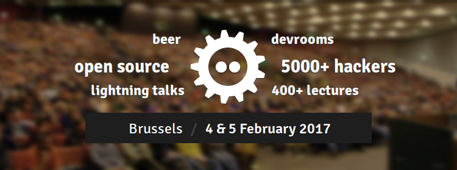
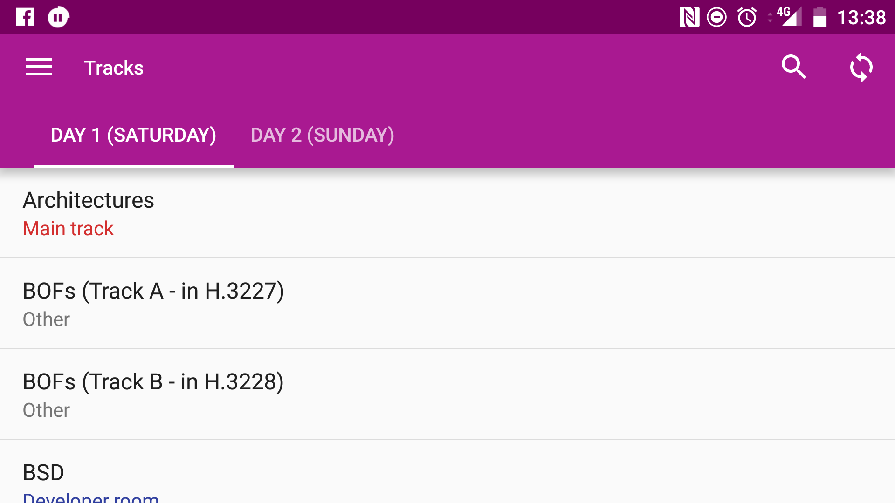
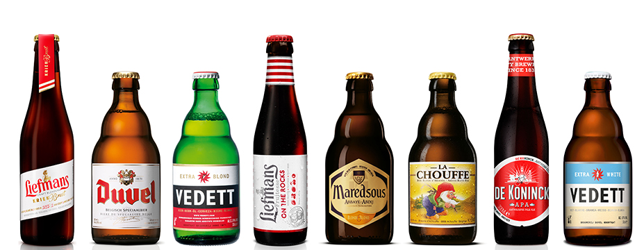
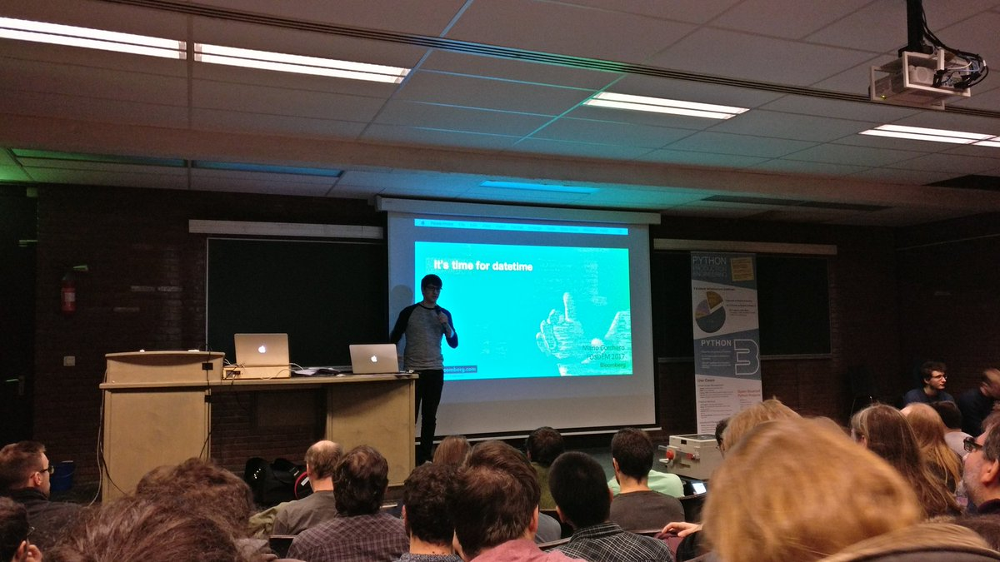
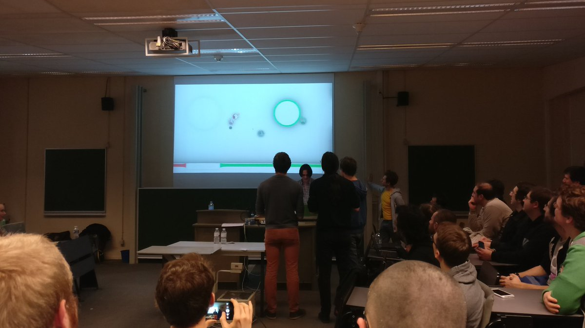
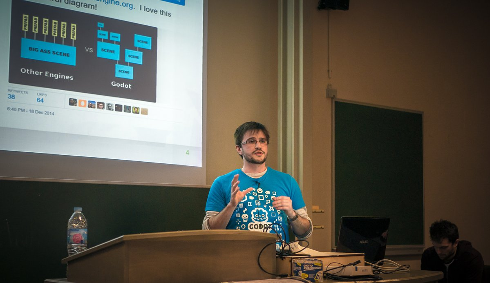

Apr 20, 2017 · Comments
Game Development

Ludum Dare 38 starts in a couple of hours.
This one is special as it marks the 15th anniversary of the biggest weekend
game development friendly competition in the world!
If you don’t know about Ludum Dare and are interested, check the
documentary they just released.
I was thinking of participating using Godot Engine.
I have a couple of social compromises this weekend and, honestly, I am a bit
scared of failing miserably, so I’m not too sure how far I’ll take this one.
Theme
The initial theme voting stages
have taken place throughout the week and now it’s down to the final round. The
final theme will be announced right when the competition starts.
16 themes made it into the final round, I picked my top 5 and came up with
quick pitches for each one of them. I know, some call this cheating but
chances of success and for any of these themes to win are rather slim anyway!
Parallel Dimensions
Split-screen platformer where you control the same character in two
parallel universes. Simple but slightly different levels. The goal is to
reach the end, however hazards may be placed in different locations and both
characters need to make it alive.
Inspiration: Ninja Twins
Pausing has Consequences
Rogue-like that becomes increasingly harder the longer you take to
find the exit to each level. Enemies keep respawning.
Inspiration: Heroes of Loot
and Left 4 Dead.
Two Colors
Visceral top-down action game where everything is grayscale except for blood.
Inspiration: Hotline Miami
meets Sin City.
Island
You’re a castaway who must survive in a procedurally generated island. Find food,
shelter, craft tools and keep threats off.
Inspiration: Stranded Deep and
Castaway
Everything has a Cost
Strategy card game where you’re a stock broker. Climb up the ladder,
make money or get fired. Stay honest or rot in jail!
Inspiration: Reigns
Good luck everybody!
Feb 18, 2017 · Comments
General

Two weekends ago I attended FOSDEM in Brussels for
the first time and it was awesome. FOSDEM is a free conference about software
development and open source with no registration required. Just show up, meet
the community and learn new things.
Here are my highlights.
Planning
With over 8k developers, 600 talks and 50 tracks spread across the university
campus, planning is essential. Popular talks would fill up the rooms very early
and the best option was to attend the previous one and get a spot in advance.
Luckily, the schedule is convenient and
easy to export. I ended up using the Android app
to plan the sessions I wanted to attend.

Alternatively, you could always watch any talk live on streaming.
The open source vibe
Hanging out with the community was really nice. For instance, I wanted to attend
Handle Conflict, Like a Boss!
but the room was full 30 min before it even started. Seeing no one was getting in,
the crowd outside decided to start a debate on conflict handling in open source
communities. We covered things like:
What do you do if one of your biggest contributors is
disrespectful to others?
I even met my good friend @jvrsantacruz by
pure chance and bumped into two more guys from university back home. Small world!
Belgian beers were enjoyed in the evening, which was obviously a plus.

Talks I attended
I got up early on both Saturday and Sunday to make most of the day. These
are the presentations I enjoyed the most.


I wish I could have attended more sessions but many were full and sometimes
it was just better to stop for a bit, have a beer and chat with people. Check
the schedule section to see
all videos.
Bonus: the Godot stand
There were company and project stands all over the university campus and one
worth mentioning was the Godot Engine stand. The
guys had the editor on a big screen and a bunch of demos, which were very cool.
Very glad I supported the project by getting one of their awesome Godot robot
t-shirts.

Looking forward to FOSDEM 2018!
Dec 19, 2016 · Comments
Games development

Godot Engine caught my eye a while back as a serious
open source alternative to the ubiquitous Unity. Some of you may know I’ve been
involved with the Libgdx project for some time, I even wrote a
book about it!
There’s nothing wrong with Libgdx, I absolutely love the project and the
more than welcoming community around it.
The problem is that shipping a game is hard. Doing so whilst working a full
time job is harder. Adding a semi-decent social life to the mix makes it
a mighty quest. There’s no such thing as too much help when it comes to
such venture. Consequently, the tooling around a fully featured engine
is hardly beatable.
Personally, I felt slightly uncomfortable working with Unity because of
its proprietary nature. However, the fact that there was no competitive
open source alternative out there really annoyed me too.
That’s why Godot has a strong appeal.

Last week, they announced the Godot Community Jam,
which started on December 16th and will continue until January 31st.
It’s hosted on itch.io and people
will be using #godotjam
on Twitter.
Looks like a great opportunity to learn the engine to me.
There’s enough time to put something together, even for a total n00b
like me. Moreover, the theme *2 buttons” encourages simplicity and
the rules are pretty lose.
I have a very rough idea of what I want to do, so it’s time to get
to work.
Will report back!
Dec 4, 2016 · Comments
General

At long last, I got around to do something I had been meaning to do for a very
long time. I migrated this Wordpress blog over to a statically generated site
powered by Hugo.
That’s 6 years or over 300 posts worth of content.
Why not stay with Wordpress?
First of all, I wanted to move away from Wordpress because it’s heavy and requires
quite a bit of setup: PHP, database, plugins and so on. Markdown based static site
generators have been around for a while and being able to keep everything in plain
text and under a familiar source control system such as Git is awesome.
I use git and Markdown all the time both at home and at work.
Why Hugo?
Hugo is an open source static site generator
written in Go. It’s cross-platform and ships as a dependency free binary. Comprehensive
documentation, wide range of
themes as well as active and helpful community
are great additions.
Whilst Jekyll was the more established solution, it
required Ruby and I really wanted to keep my environment as simple as possible.
Other alternatives lacked features, support, had a more complex setup or a combination
of the former.
We’ve got a winner!
Exporting Wordpress content
The process went on like this.
- Exported all posts and pages to XML with the standard Wordpress Export tool.
- Used Exitwp to convert content to Markdown.
- Lots of regex search and replace in Sublime.
Back in 2010 I used the WYSIWYG editor in Wordpress and later on I moved to use
the Markdown module in Jetpack. The mix
really confused Exitwp and required me to do a lot of manual editing and that took
quite a while.
Pushing to production
This excellent tutorial
proved most useful to get a streamlined publishing pipeline.
Essentially, this involved the following:
- Install Hugo on my production server
- Put the site sources in a local git repository
- Create a git bare repository in the production server
- Add a
post-receive hook on the production repository that runs hugo and builds the site.
Give the article a proper read if you want to know more. The publish hook also
uses rsync to back everything up in case something goes amiss.
To create a new post, test it locally and publish it, I simply do:
hugo new post/category/name.md
hugo serve --buildDrafts
git add content
git push prod
Results
So far I love it!
Here are some poor man’s stats on loading times for the homepage, mind
that I haven’t tried to optimized neither of the two.
- Wordpress: ~3.7s
- Hugo: ~2.1s
Please, let me know if you find anything broken, I would really appreciate it!
Sep 10, 2016 · Comments
Games developmentProjects

There’s a new Ashley release, check the changes for 1.7.3 below:
- API addition: Adds ‘createComponent()” method to
Engine class. Commit 07fc2ba6bcd9996c472c651b56b57b32fd8fd3a7.
- API addition: Adds ‘createEntity()” method to
Engine class. Commit 45dd7e0e4a52c8d65f520fac4e8f4e83471b215b.
- API addition: Adds ‘addAndReturn()” method to
Entity class. Commit 423148a2719873efb50d4f2b3982c247df4fceca.
- Bug fix: Fixes systems going out of priority order after removal. Issue #237.
- Bug fix: Fixes returning pooled entity to the entity pool twice. Issue #221.
- Update: uses Travis for CI. Commit c4265eff694cfb34eaef1bdd929ee398c1ccfa64.
- Update: uses Libgdx 1.9.4.
To use it, change your dependency to com.badlogicgames.gdx:ashley:1.7.3. The new nightly dependency is com.badlogicgames.gdx:ashley:1.7.4-SNAPSHOT. Thanks for your continued support!